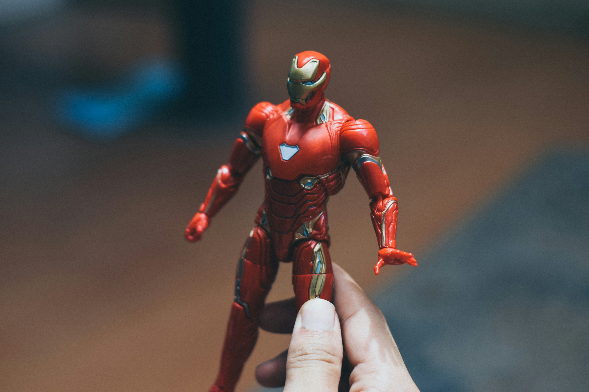

Kiemelt Figurák

Iron Man
Tony Stark, a zseniális feltaláló és milliárdos, aki saját maga tervezte páncélruhájában harcol a bűnözők ellen.

Darth Vader
A Sith Nagyúr, aki a Sötét Oldal erőit használva uralja a Galaxist, és a Jedi Lovagok legnagyobb ellensége.
Tudtad-e?
- Iron Man páncélját eredetileg egy szovjet tudós tervezte
- Darth Vader maszkja a japán szamuráj sisakokból merített ihletet
- A Star Wars eredeti címe "The Star Wars" lett volna
Legfrissebb Hírek
Star Wars: The Mandalorian & Grogu
A Disney bejelentette, hogy a The Mandalorian első mozifilmje 2026-ben kerül a mozikba, Jon Favreau rendezésében.
Marvel: Fantastic Four
A Marvel bejelentette, hogy a Fantastic Four film 2025. július 25-én kerül a mozikba. A főszereplők: Pedro Pascal (Reed Richards), Vanessa Kirby (Sue Storm), Joseph Quinn (Johnny Storm) és Ebon Moss-Bachrach (Ben Grimm).